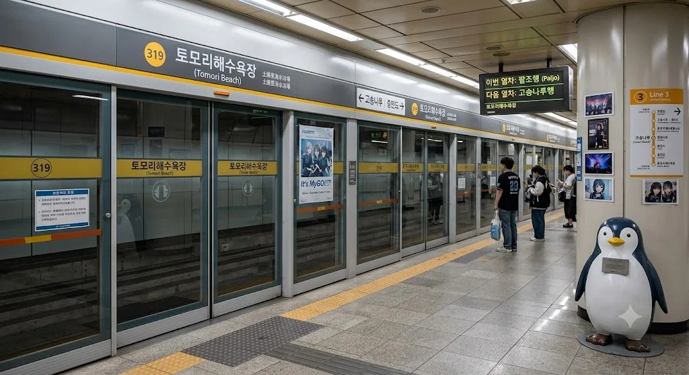

- 1. 개요
- 2. 역 정보 및 구조
- 2.1. 역사 및 이용객 변화
- 2.2. 3호선·창전선 환승 구조 (예정)
- 3. 역 주변 정보
- 3.1. 출구 정보
- 3.2. 주요 인접 시설 상세
- 4. 일평균 이용객
- 5. 승강장
- 5.1. 3호선 (지하 3층)
- 5.2. 창전선 (지상 2층, 미개통·예정)
- 6. 연계 교통
- 7. 여담 (레전드 성지 & 해프닝 7선)
1. 개요
효빈 도시철도 3호선 319번 및 미개통 노선인 창전선 C26번(예정). 효빈광역시 북구 고송동 103 (행정동 고송1동) 소재. 효빈광역시 북구의 북서쪽 해안 끝자락에 펼쳐진 1.2km 규모의 백사장 명소 토모리해수욕장 바로 코앞을 끼고 있는 역이다.
현재는 노란색(#FFCC11) 3호선 단독 역으로 성업 중이며, 추후 하늘색(#33AAFF) 과좌식 모노레일 노선인 창전선 3단계 구간(청능, 고송강변~토모리해수욕장)이 최종 완공되면 창전선의 대망의 종착역(C26)이자 3호선과의 해안 환승 거점역으로 거듭날 예정이다. 3호선 본선은 해안 지반 특성상 지하 3층의 깊은 심도에 자리 잡고 있으며, 향후 들어설 창전선은 바닷가를 시원하게 조망하며 달리는 지상 2층 고가 모노레일 역사로 건설될 계획이다.
역 출구를 나오자마자 불과 도보 120m(1분 거리) 앞에 오하리 가문이 운영하는 북구 최고의 5성급 랜드마크인 효빈 하라오호텔이 위풍당당하게 서 있고, 반대편 해송 숲 쪽으로는 도보 150m 거리에 감성 숙박의 끝판왕인 토모리 해변 글램핑장이 자리 잡고 있다. 또한 역 남동쪽 배후지에는 고송1동의 대표적인 오션뷰 대단지인 토모리비치아파트가 위치해 있어, 관광·호캉스·특수숙박 수요와 탄탄한 고정 거주민 통근·통학 수요를 동시에 쓸어 담는 알짜배기 역이다.
2. 역 정보 및 구조
2.1. 역사 및 이용객 변화
2004년 3월 7일 효빈 도시철도 3호선 개통과 함께 영업을 시작했다. 개통 초기인 2000년대 중반까지만 해도 여름 해수욕장 성수기(7~8월)와 효빈 하라오호텔 투숙객, 그리고 토모리비치아파트 입주민들을 제외하면 평일 낮에는 한산한 편이었다. 당시에는 겨울만 되면 바닷바람과 갈매기만 개찰구를 통과한다는 농담이 있었을 정도.
그러나 2010년대 후반 해변 산책로 리모델링과 토모리 해변 글램핑장 개장으로 사계절 캠핑족이 몰려들기 시작했고, 결정적으로 2020년대 들어 《BanG Dream! It's MyGO!!!!!》의 보컬 타카마츠 토모리(高松 燈)와 역명·행정구역명(고송동=高松 + 토모리=土謨里)이 소름 돋게 일치한다는 사실이 발굴되면서 전국구 서브컬처 성지로 대폭발했다. 여기에 효빈 하라오호텔 지하 1층 아케이드의 '비밀의 굿즈 매점'을 털러 오는 러브라이버들과, 효빈국제공항에서 3호선으로 딱 두 정거장(약 10분) 만에 넘어오는 외국인 관광객까지 합세하며 일평균 이용객 1만 1천 명을 돌파하는 기염을 토했다.
2.2. 3호선·창전선 환승 구조 (예정)
현재 운영 중인 3호선 역사는 해안선 인접 연약지반을 통과하기 위해 지하 3층 규모로 깊게 파여 있다. 지하 1층 맞이방에는 바다 물결을 형상화한 푸른빛 루버 천장과 노란색 3호선 포인트 인테리어가 적용되어 있으며, 3호선 공식 마스코트인 박라미가 서핑보드와 커피컵을 들고 활짝 웃으며 브이(V)를 그리는 대형 포토존이 설치되어 있다.
향후 창전선 3단계 구간이 개통되면, 지상 2층 고가에 설치될 창전선 종착 승강장(C26)에서 1번·2번 출구 상부 브릿지를 통해 지하 1층 3호선 대합실까지 직결 에스컬레이터로 이어지는 입체 환승 통로가 구축될 예정이다. 이미 지하 1층 맞이방 천장 한편에는 창전선 환승 통로 연결을 위한 가벽(예비 타공 구역)이 마련되어 있다.
3. 역 주변 정보
3.1. 출구 정보

 토모리해수욕장역 출구 정보
토모리해수욕장역 출구 정보
|
||
|---|---|---|
| 번호 | 주요 시설 및 방향 | 비고 |
| 1 | 효빈 하라오호텔 (5성급 / 120m), 토모리해수욕장 정문 광장, 하라오 외국인 전용 카지노, 지하 1층 아케이드(비밀의 굿즈 매점), 토모리 오션 스파 | 호텔·해수욕장 정문 초근접 (도보 1분 컷) |
| 2 | 토모리 해변 글램핑장 (특수숙박 / 150m), 토모리해수욕장 서측 백사장, 토모리 해변공원, 펭귄 조형물 광장 & 펭귄 인형 튜브 대여소, 해송 야영장 | 글램핑장·해변공원 방향 (도보 2분 컷) |
| 3 | 토모리비치아파트 (북구 고송1동 [고송동]), 시남초등학교, 토모고등학교, 고송1동 해안상가거리, 토모리수호약국(반창고 성지) | 주거단지 및 학교 방향 |
3.2. 주요 인접 시설 상세
1번 출구 방면: 효빈 하라오호텔 (5성급 / 도보 120m)
1번 출구 에스컬레이터를 타고 지상으로 올라오자마자 정면 120m 거리에 20층 규모의 곡선형 5성급 랜드마크 효빈 하라오호텔이 위용을 자랑한다. 동구대학교 경영학과 재학생이자 당가동 어벤져스 멤버인 오하리 가문((주)하라오 홀딩스)의 본진으로, 전 객실 100% 오션뷰와 3층 외국인 전용 카지노, 그리고 지하 1층 아케이드의 전설적인 '비밀의 굿즈 매점'을 품고 있다. 비가 억수같이 쏟아지는 날에도 1번 출구 캐노피에서 우산 펼 새도 없이 1분 만에 호텔 회전문을 통과할 수 있는 미친 역세권 입지를 자랑한다.
2번 출구 방면: 토모리 해변 글램핑장 (특수숙박 / 도보 150m)
2번 출구로 나와 해변공원 소나무(해송) 숲길을 따라 서쪽으로 150m만 걸어가면 토모리 해변 글램핑장이 나타난다. 파도 소리를 BGM 삼아 바비큐와 불멍을 즐길 수 있는 해안 특수숙박 시설로, 카라반 구역과 럭셔리 오션뷰 돔 텐트 구역으로 나뉘어 있다. 지하철 3호선을 타고 두 손 가볍게 와서 캠핑을 즐길 수 있어 주말마다 대학생 MT, 커플, 그리고 밤새 뱅드림·러브라이브 라이브 블루레이를 빔프로젝터로 상영하며 고기를 구워 먹는 덕후 모임(...)으로 예약이 터져 나간다.
3번 출구 방면: 토모리비치아파트 (북구 고송1동 [고송동]) 및 학군
해안가 반대편인 남동쪽 3번 출구 바로 앞에는 북구 고송1동(법정동 고송동)을 대표하는 해안 주거단지인 토모리비치아파트가 대단지로 조성되어 있다. 고층 세대에서는 토모리해수욕장 앞바다와 하라오호텔의 야경이 한눈에 내려다보이는 '영구 오션뷰' 프리미엄을 누리며, 단지 남측으로는 시남초등학교와 토모고등학교가 나란히 붙어 있어 통학 여건도 매우 우수하다.
4. 일평균 이용객
| 토모리해수욕장역 이용객 통계 | ||
|---|---|---|
| 연도 | 일평균 이용객 | 비고 |
| 2020년 | 5,721명 | 코로나19로 인한 공항·호텔·해수욕장 수요 일시 감소 |
| 2021년 | 6,501명 | 토모리 해변 글램핑장 리뉴얼 오픈 및 국내 호캉스족 유입 |
| 2022년 | 10,323명 | 해외여행 재개 + HAF 성지순례객 대폭발로 이용객 급증 |
| 2023년 | 11,345명 | 《It's MyGO!!!!!》 방영 이후 '토모리' 성지순례 신드롬 |
| 2024년 | 11,322명 | 사계절 상시 1.1만 명대 안정권 진입 |
5. 승강장

5.1. 3호선 (지하 3층)
복선 상대식 승강장이며, 스크린도어가 완비되어 있다. 열차 진입 시 3호선 마스코트 박라미의 쾌활한 안내방송과 함께 갈매기 소리가 섞인 전용 진입 멜로디가 울려 퍼진다.
| 고송나루 ↑ | ||||
| 하 | ㅣ ㅣ | 상 | ||
| ↓ 중만도 | ||||
| 상 |
효빈 도시철도 3호선 |
고송나루 · 고송교차로 · 효빈역 · 팔조 방면 |
| 하 |
효빈 도시철도 3호선 |
중만도 · 효빈국제공항 방면 |
5.2. 창전선 (지상 2층, 미개통·예정)
※ 창전선 3단계 구간(미개통)의 대망의 종착역(C26)으로 계획되어 있으며, 회차 선로를 끝으로 더 이상 선로가 이어지지 않는다.
| 북고송 ↑ | ||||
| 상 | ㅣ | ㅣ | 하 | |
| 시종착역 | ||||
| 상 |
창전선 (예정)
|
북고송 · 시청 · 효빈역 · 팔조 방면 |
| 하 |
창전선 (예정)
|
당역 종착 (승차 불가) |
6. 연계 교통
역 바로 앞 해안대로 변에 위치한 '토모리역' 정류장을 통해 효빈시 각지로 뻗어 나가는 시내버스(간선·지선·급행·광역·투어버스)를 이용할 수 있다. 특히 효빈 하라오호텔 정문 앞(1번 출구 120m)에는 탄성군 소원면 소재 계열사인 효빈 샤이니 리조트까지 직통으로 쏴주는 투숙객 전용 VVIP 보라색 리무진 셔틀버스도 정차한다.
| 구분 | 정류소명 | 노선 번호 |
|---|---|---|
| 순방향 | 토모리역 (하라오호텔·1번출구앞) | [급행] 9 | [지선] 222, 242, 251, 261, 271 | [광역] 3000 | [좌석] 2222, 3333 | [투어] 9999 |
| 역방향 | 토모리역 (토모리비치아파트·건너편) | [급행] 09-1 | [지선] 222-1, 422, 521, 621, 721 | [광역] 3000R | [좌석] 2222R, 3333R | [투어] 9999R |
7. 여담 (레전드 성지 & 해프닝 7선)
7.1. 지도가 예언한 'MyGO!!!!!'의 바다와 반창고 대란
역명은 인근의 유서 깊은 해변인 '토모리(土謨里) 해수욕장'에서 그대로 따왔다. 원래 '토모리(土謨里)'는 구한말 효빈군 고송면 시절부터 존재했던, "기름진 흙(土)과 지혜로운 꾀(謨)가 모이는 해안 마을"이라는 뜻의 근본 있는 지명이었다. 심지어 이 역이 속한 법정동은 고송동(高松洞)이다.
그런데 세월이 흘러 2023년, 미디어믹스 프로젝트 《BanG Dream! It's MyGO!!!!!》가 방영되면서 전 세계 서브컬처 팬덤이 단체로 뇌정지를 일으켰다. 작중 주인공이자 보컬인 타카마츠 토모리(高松 燈)의 성씨 '타카마츠(高松)'가 법정동인 고송(高松)동과 한자까지 100% 똑같고, 이름 '토모리'는 토모리해수욕장역과 발음이 토씨 하나 안 틀리고 완벽하게 일치했던 것이다! 이쯤 되면 구한말 작명가 어르신이 미래에서 타임머신을 타고 온 부시로드 직원이었다는 게 학계의 정설이다.
설상가상으로 이 역 2번 출구 해변공원에는 2004년 역 개통 당시 자매결연 기념으로 세워진 '황제펭귄 가족 석상'이 원래부터 서 있었는데, 하필 캐릭터 타카마츠 토모리가 가장 환장하는 동물이 펭귄이라 팬들은 이를 두고 "세계관의 경계가 무너진 우주의 기적"이라 찬양하기 시작했다. 이후 성지순례를 온 오타쿠들이 3번 출구 앞 '토모리수호약국'에 몰려가 캐릭터 반창고와 귀여운 일회용 밴드를 박스째로 쓸어 담는 바람에, 평범한 동네 약국이 전국 약사 공론장에서 '일일 반창고 판매량 전국 1위 기적의 약국'으로 소개되는 진풍경이 벌어졌다. 약사 어르신은 처음엔 영문을 몰라 어리둥절해하시다, 요즘은 아예 약국 문 앞에 "펭귄 반창고·별 모양 밴드 대량 입고 완료!"라는 손글씨 POP를 붙여놓고 성지순례객들에게 박카스를 서비스로 쥐여주신다 카더라.
7.2. 1번 출구 120m의 기적: '효빈 하라오호텔'과 지하 1층의 연금술사
1번 출구에서 불과 120m 떨어진 곳에 우뚝 솟은 5성급 효빈 하라오호텔 때문에 역 대합실에서는 1년 내내 웃지 못할 해프닝이 벌어진다. 초행길인 외지 관광객들이 택시나 역무원에게 "여기 파라오(Pharaoh) 호텔이 어디예요?"라고 물어보며 이집트 스핑크스 모텔을 찾는 참사가 매일같이 일어나는 것. 때문에 1번 출구 에스컬레이터 벽면에는 호텔 오너 일가인 오하리 가문이 직접 기부 협찬한 초대형 골드&퍼플 네온 안내판이 붙어 있는데, 거기엔 궁서체로 "파라오(Pharaoh)가 아닙니다! 하라오(HARAO) 호텔입니다! 스핑크스 찾으실 분은 종점까지 가시고, 5성급 오션뷰와 샤이니~✨한 휴식을 원하시는 분만 1번 출구 직진 120m 오십시오!"라고 적혀 있다.
더욱 무서운 것은 이 호텔 지하 1층 아케이드 구석에 자리 잡은 '비밀의 굿즈 매점'과 토모리해수욕장역 지하도 사이의 동선이다. 원래는 투숙객들에게 튜브나 선크림을 팔던 매점이었으나, 오너 가문의 영애인 오하리(도플갱어: 오하라 마리)의 사심과 덕후 지인들의 입김이 들어가면서 일본 누마즈 현지에서도 구하기 힘든 《러브 라이브! 선샤인!!》 초레어 한정판 굿즈와 대형 네소베리들이 산더미처럼 쌓인 연금술의 성지로 변질되었다. 덕분에 주말 아침 첫차 시간이 되면 5성급 호텔 숙박객도 아니면서 오직 지하 1층 매점 오픈런을 뛰기 위해 3호선 첫차를 타고 내리는 덕후들이 1번 출구 계단을 전력 질주하는 진풍경을 볼 수 있다. 호텔 경비원들도 이제는 양손에 네소베리 가방을 든 덕후들을 보면 "지하 1층 매점은 왼쪽 엘리베이터 타시면 됩니다, 샤이니한 하루 되세요"라며 90도로 정중히 안내해 준다.
7.3. 2번 출구 150m '토모리 해변 글램핑장'의 펭귄 튜브와 돌멩이 채집
2번 출구에서 해송 숲을 따라 딱 150m만 걸어가면 나오는 토모리 해변 글램핑장은 전국에서 가장 기묘한 캠핑 문화를 자랑하는 특수숙박 시설이다. 보통 해변 글램핑장이라고 하면 밤에 감성 발라드나 인디 음악을 틀어놓고 와인을 마시는 게 일반적이지만, 이곳은 투숙객의 절반 이상이 성지순례를 겸해 찾아온 밴드물·아이돌물 팬들이라 해가 지면 각 글램핑 텐트마다 빔프로젝터로 무대 영상이 상영되고 삼겹살 불판 앞에서 콜(Call)이 터져 나온다.
특히 글램핑장 바로 앞 대여소에서는 여름철마다 '특대형 펭귄 인형 튜브'를 대여해 주는데, 3호선을 타고 온 성지순례객들이 1인 1펭귄 튜브를 끼고 파도에 둥둥 떠다니며 "미아(迷子)가 되어버렸어..."라고 중얼거리는 광경은 일반 피서객들에게 엄청난 컬처 쇼크를 선사한다. 게다가 글램핑장 체크인 시 웰컴 키트로 바비큐용 소금과 함께 '예쁜 해변 조약돌 채집용 미니 유리병'을 주는데, 이는 타카마츠 토모리가 길가의 특이한 돌멩이나 나뭇잎을 주워 모으는 설정을 글램핑장 사장님이 기가 막히게 캐치해 상술(?)로 연결한 것이다. 문제는 덕후들이 너무 열심히 돌을 주워 가는 바람에 해수욕장 관리사무소에서 매년 봄마다 자갈을 트럭째로 새로 부어 넣어야 한다는 슬픈 전설이 있다.
7.4. 3번 출구 '토모리비치아파트' 주민들의 해탈과 부동산 대폭등
3번 출구 바로 코앞에 자리 잡은 북구 고송1동(법정동 고송동)의 터줏대감 단지 토모리비치아파트 주민들은 지난 20년간 드라마틱한 세월을 겪었다. 2004년 입주 초기만 해도 "역 이름은 왜 하필 촌스럽게 토모리해수욕장역이냐, '고송오션뷰역'으로 개명해라!"라며 구청에 민원을 넣던 입주민들이 꽤 있었다.
그러나 2020년대 들어 '토모리'라는 이름 자체가 글로벌 서브컬처계의 치트키가 되면서 상황이 180도 뒤집혔다. 일본, 대만, 중국은 물론 국내 각지의 자산가 덕후들이 "내가 타카마츠 토모리와 오하라 마리(하라오호텔)의 성지가 동시에 내려다보이는 고송동 토모리비치아파트에 실거주하겠다!"라며 매물을 부르는 게 값으로 사들이기 시작한 것이다. 여기에 창전선(C26) 더블 역세권 호재까지 겹치면서 아파트 실거래가가 수직 상승하자, 현재 토모리비치아파트 부녀회와 입주자대표회의의 태도는 완벽한 '절대 수호 모드'로 돌변했다. 누군가 역명 개명이나 해변의 펭귄 동상 철거를 입에 올리기라도 하면 아파트 주민들이 먼저 달려 나와 "어디서 감히 우리 복덩이 토모리 양의 존함을 건드리느냐!"라며 극대노할 정도다. 매년 여름 HAF 기간에는 아파트 단지 상가 번영회에서 직접 '환영! 고송동 토모리해수욕장 성지순례단 여러분!'이라는 현수막을 3번 출구 앞에 내걸고 시원한 얼음물을 나눠주는 훈훈한 광경이 펼쳐진다.
7.5. 효빈국제공항 10분 컷이 부른 외국인 캐리어 부대와 카지노 특수
토모리해수욕장역(319)에서 3호선 하행 열차를 타면 중만도역(320) 단 한 정거장만 거쳐 종점인 효빈국제공항역(321)에 도착한다. 역간 거리가 있는 해안·해상 구간을 시속 80km로 시원하게 주파하기 때문에, 탑승 후 정확히 9분 30초~10분이면 국제선 체크인 카운터 앞까지 직결된다.
이 사기적인 공항 접근성 덕분에 토모리해수욕장역은 오전 시간대마다 1번 출구 효빈 하라오호텔에서 체크아웃하고 쏟아져 나오는 외국인 관광객들의 대형 캐리어 행렬로 북적인다. 특히 전날 밤 하라오호텔 3층 외국인 전용 카지노에서 잭팟을 터뜨리거나(혹은 영혼까지 털리거나), 지하 1층 비밀 매점과 고송교차로역 애니메이트에서 산 굿즈로 캐리어가 터지기 직전인 일본·중화권 관광객들이 한데 섞여 승강장 진풍경을 만든다. 이 때문에 토모리해수욕장역은 지선급 끝자락 역임에도 불구하고 역사 내 모든 엘리베이터가 24인승 특대형 화물 겸용 규격으로 설치되어 있으며, 개찰구 역시 대형 이민 가방과 펭귄 튜브(...)가 걸리지 않고 통과할 수 있는 와이드 플랩 게이트로 전량 교체되어 있다.
7.6. 창전선 모노레일(C26) 종착역 확정과 '박라미 × 심세이' 콜라보
현재 건설 및 추진 중인 하늘색(#33AAFF) 과좌식 모노레일 창전선의 최종 종착역(C26)이 바로 이 역이다. 1단계(팔조~하성천, 2027년 9월 개통 예정)와 2단계(덕현중앙~시청)에 이어, 향후 3단계 구간(청능, 고송강변~고송경찰서~북고송~토모리해수욕장)이 연결되면 창전구·청엽구 부촌 주민들과 효빈역 KTX 이용객들이 환승 한 번 없이 지상 모노레일을 타고 푸른 토모리 바다 바로 위까지 날아올 수 있게 된다.
비록 3단계 구간은 아직 미개통 상태라 역내 노선도와 안내판의 창전선 로고에는 임시 회색 취소선 스티커가 붙어 있지만, 효빈교통공사의 노선 줄타기(?) 마케팅은 이미 시작되었다. 3호선 공식 마스코트인 금발 포니테일 미소녀 박라미(후드티에 청바지, 백팩을 메고 커피컵을 든 활달한 대학생 컨셉)가 지하 3층에서 지상으로 올라와, 미래에 지상 2층 모노레일 종착역으로 합류할 창전선 공식 마스코트 심세이(푸른 브릿지가 들어간 흑발에 열쇠 펜던트 목걸이를 한 시크한 청년)를 기다리며 해변 벤치에 앉아 있는 공식 일러스트 포스터가 역 대합실에 걸려 있는 것! 포스터 하단에는 "세이야, 창전선 3단계 개통될 때까지 라미가 커피 사 들고 토모리 해변에서 기다릴게! (※ 고송강변~토모리 구간 조기 착공을 기원합니다)"라는 문구가 적혀 있어, 팬들 사이에서 두 캐릭터의 관계성 맛집 성지로도 폭발적인 인기를 끌고 있다.
7.7. 겨울 바다의 '하루히카게(春日影)' 금지령 해프닝
여름철 해수욕장 개장 기간에는 역사 내 배경음악(BGM)으로 《It's MyGO!!!!!》의 대표곡인 〈미성(迷星)치우침〉이나 〈벽천반주(碧天伴走)〉 같은 청량한 곡들이 공식 편성되어 흘러나온다. 그런데 한겨울 비수기 밤만 되면 어쿠스틱 기타나 베이스를 둘러멘 밴드 지망생 덕후들이 2번 출구 앞 해변 방파제나 지하 1층 대합실 버스킹 존에 모여들더니, 기어코 작중 인간관계 파탄의 상징곡인 〈하루히카게(春日影)〉를 연주하기 시작했다.
문제는 누군가 이 곡의 전주를 연주하기만 하면 주변을 지나가던 다른 오타쿠들이 약속이라도 한 듯 발걸음을 멈추고 "어째서 하루히카게를 연주한 거야?!(なんで春日影やったの！？)"라고 절규하며 상황극을 벌이는 바람에(...), 밤늦게 퇴근하던 토모리비치아파트 주민들과 효빈 하라오호텔 야간 산책객들이 진짜 싸움이 난 줄 알고 화들짝 놀라 역무실에 신고하는 해프닝이 속출했다. 결국 북효빈관리역 역장님이 대합실 버스킹 존에 [안내: 밤 10시 이후 역사 및 출구 반경 50m 내에서 〈하루히카게〉 연주 및 "어째서 연주한 거야" 고성방가 상황극을 엄격히 금지합니다. 적발 시 박라미 등신대 옆에서 반성문 작성 후 퇴거 조치합니다.]라는 유쾌하면서도 단호한 공지문을 부착하면서 사태는 평화롭게(?) 일단락되었다.